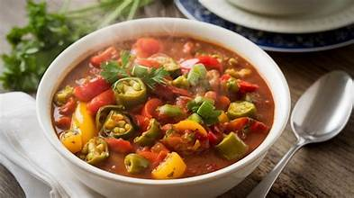
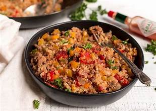
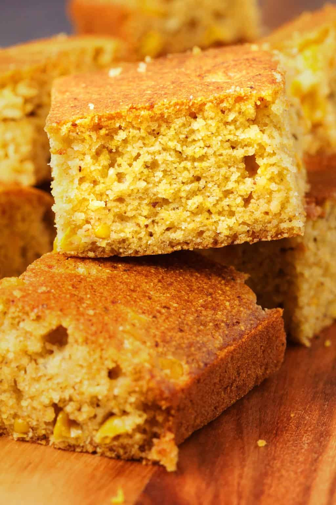
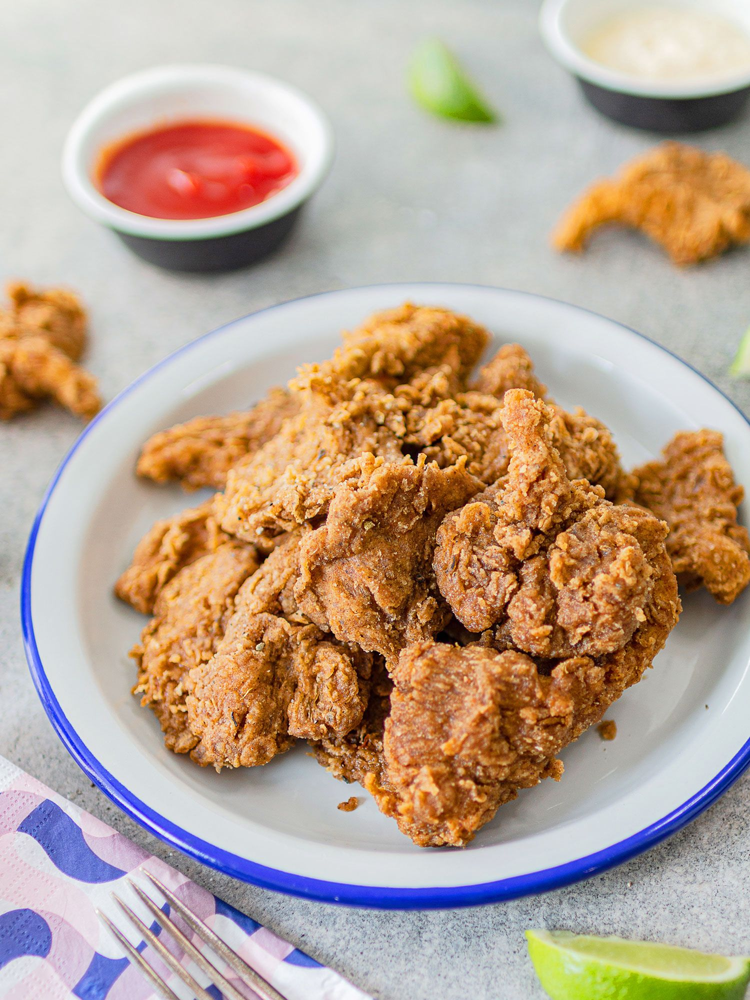
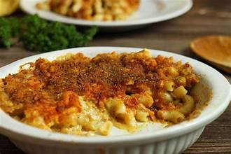

Plant-based Southern comfort, straight from the heart.
Advertisement
Vegan Soul Food, Big Flavor – Zero Animal Products
Welcome to Vegan Soul Food Kitchen, your home for plant-based Southern comfort classics.
We keep it simple, familiar, and full of flavor – from crispy fried "chicken" to creamy mac & cheese and sweet peach cobbler.
Start with any of the recipes below and build your own soul food plate.
Main Dish
Hearty Vegan Gumbo
Serves 6–8 · Prep 25 min · Cook 50 min · 100% Vegan

A thick, richly flavored Louisiana classic loaded with okra, kidney beans, and the holy trinity of vegetables. This plant-based version starts with a dark roux and delivers all the soul and complexity of traditional gumbo.
Ingredients
1/2 cup neutral oil
1/2 cup all-purpose flour
1 large onion, diced
1 green bell pepper, diced
3 celery stalks, diced
4 cloves garlic, minced
2 cups fresh or frozen okra, sliced
1 can (15 oz) kidney beans, drained and rinsed
1 can (14.5 oz) diced tomatoes
6 cups vegetable broth (low sodium)
2 bay leaves
2 tsp Cajun seasoning
1 tsp smoked paprika
1 tsp dried thyme
1/2 tsp cayenne pepper (adjust to taste)
1 tsp file powder (optional, added at end)
Salt and black pepper to taste
4 green onions, sliced
Fresh parsley, chopped
Cooked white rice for serving
Hot sauce for serving
How to Prepare
Make the roux: In a large heavy-bottomed pot, heat oil over medium heat. Gradually whisk in flour. Continue whisking constantly for 15–20 minutes until the roux turns a deep chocolate brown. Be patient – this is the flavor foundation.
Carefully add onion, bell pepper, and celery to the hot roux (it will sizzle). Stir constantly for 5–7 minutes until vegetables soften.
Add garlic and okra, cooking 3–4 minutes more.
Stir in diced tomatoes, kidney beans, vegetable broth, bay leaves, Cajun seasoning, smoked paprika, thyme, and cayenne. Bring to a boil.
Reduce heat to low and simmer uncovered 30–35 minutes, stirring occasionally, until gumbo thickens and flavors meld.
Remove from heat. Discard bay leaves. Stir in file powder if using (don't boil after adding file as it gets stringy).
Season with salt and black pepper to taste.
Serve hot over white rice, garnished with green onions and parsley. Pass hot sauce at the table.
Tip: Gumbo tastes even better the next day after flavors have had time to develop. Store in the fridge up to 5 days or freeze for longer storage.
Serves 4–6 · Prep 15 min · Cook 30 min · 100% Vegan

A Louisiana classic made completely plant-based. Savory rice cooked with the "holy trinity" of Cajun cooking, plenty of spices, and hearty mushrooms and lentils for that meaty texture. Full of soul, no meat required.
Ingredients
1 1/2 cups long-grain white rice
3 cups vegetable broth (low sodium)
2 tbsp olive oil
1 large onion, diced
1 green bell pepper, diced
2 celery stalks, diced
8 oz mushrooms (cremini or baby bella), finely chopped
1/2 cup cooked green or brown lentils
4 cloves garlic, minced
2 tsp Cajun seasoning
1 tsp smoked paprika
1/2 tsp dried thyme
1/2 tsp oregano
1/4 tsp cayenne pepper (adjust to heat preference)
2 bay leaves
Salt and black pepper to taste
3 green onions, sliced (for garnish)
Fresh parsley, chopped (for garnish)
Hot sauce for serving
How to Prepare
Heat olive oil in a large pot or deep skillet over medium-high heat. Add onion, bell pepper, and celery (the "holy trinity"). Sauté 5–7 minutes until softened.
Add chopped mushrooms and cook another 5 minutes until they release moisture and begin to brown.
Stir in garlic and cook 1 minute until fragrant.
Add Cajun seasoning, smoked paprika, thyme, oregano, cayenne, salt, and black pepper. Stir well to coat vegetables.
Add rice and stir for 1–2 minutes to toast slightly.
Pour in vegetable broth and add bay leaves. Bring to a boil.
Reduce heat to low, cover, and simmer 15–18 minutes until rice is tender and liquid is absorbed.
Stir in cooked lentils and let sit covered for 5 minutes off heat.
Remove bay leaves, fluff with a fork, and garnish with green onions and parsley.
Serve hot with your favorite hot sauce on the side.
Tip: For deeper flavor, use a mix of white and wild rice. This dish tastes even better the next day and freezes beautifully for meal prep.
Tender black-eyed peas simmered with aromatic vegetables, herbs, and stewed tomatoes. A soul food staple traditionally eaten for good luck on New Year's Day – now 100% plant-based and packed with flavor.
Ingredients
1 lb dried black-eyed peas, rinsed and picked over
1 tbsp olive oil
1 large onion, diced
1 green bell pepper, diced
3 celery stalks, diced
4 cloves garlic, minced
1 can (14.5 oz) diced tomatoes with juice
4 cups vegetable broth (low sodium)
2 bay leaves
1 tsp smoked paprika
1 tsp dried thyme
1/2 tsp cayenne pepper (adjust to taste)
1 tsp liquid smoke (optional)
Salt and black pepper to taste
2 tbsp apple cider vinegar
Fresh parsley for garnish
How to Prepare
In a large pot, heat olive oil over medium heat. Add onion, bell pepper, and celery. Sauté 5–7 minutes until softened.
Add garlic and cook 1 minute until fragrant.
Stir in black-eyed peas, diced tomatoes with juice, vegetable broth, bay leaves, smoked paprika, thyme, and cayenne.
Bring to a boil, then reduce heat to low. Cover and simmer 40–45 minutes until peas are tender but not mushy.
Add liquid smoke if using. Season with salt and black pepper to taste.
Stir in apple cider vinegar for brightness. Remove bay leaves.
Serve hot over rice or with cornbread, garnished with fresh parsley.
Tip: These taste even better the next day. Store in the fridge up to 5 days or freeze for meal prep.
Serves 8–10 · Prep 10 min · Bake 20–25 min · 100% Vegan

Sweet and savory golden cornbread with the perfect crumb. This plant-based version is just as moist and delicious as the traditional – essential for soaking up all those flavorful greens and gravies.
Ingredients
1 cup cornmeal (medium or fine grind)
1 cup all-purpose flour
1/4 cup sugar (adjust to preference)
1 tbsp baking powder
1/2 tsp salt
1 cup unsweetened plant milk (soy or oat works best)
1/3 cup neutral oil or melted vegan butter
1 tbsp apple cider vinegar
1 tsp vanilla extract (optional)
How to Prepare
Preheat oven to 400°F (200°C). Grease an 8x8 inch baking pan or cast iron skillet.
In a bowl, mix plant milk with apple cider vinegar. Let sit 5 minutes to create vegan "buttermilk."
In a large bowl, whisk together cornmeal, flour, sugar, baking powder, and salt.
Add the plant milk mixture, oil, and vanilla (if using) to the dry ingredients. Stir just until combined – don't overmix.
Pour batter into prepared pan and smooth the top.
Bake 20–25 minutes until golden and a toothpick inserted in the center comes out clean.
Let cool 10 minutes before slicing. Serve warm with vegan butter.
Tip: For extra flavor, stir in jalapeños, corn kernels, or vegan cheddar before baking.
Serves 3–4 · Prep 20 min · Cook 20 min · 100% Vegan

All the crunch, none of the chicken. Meaty oyster mushrooms get seasoned, battered, and fried until golden – perfect with hot sauce and a side of greens. Completely plant-based, totally delicious.
Ingredients
1 lb oyster mushrooms (or large king oyster pieces)
1 cup unsweetened plant milk (soy or oat)
1 tbsp apple cider vinegar
1 cup all-purpose flour
1/2 cup cornstarch
2 tsp garlic powder
2 tsp onion powder
2 tsp smoked paprika
1 tsp dried thyme
1 tsp salt + more to taste
1/2 tsp black pepper
1/2 tsp cayenne (optional for heat)
Neutral oil for frying
How to Prepare
In a bowl, mix the plant milk and apple cider vinegar. Let sit 5 minutes to curdle slightly – this creates a vegan buttermilk substitute.
Gently clean the mushrooms and tear into large "chicken" pieces.
In another bowl, whisk together flour, cornstarch, garlic powder, onion powder, smoked paprika, thyme, salt, pepper, and cayenne.
Dip each mushroom piece into the plant milk mixture, then into the flour mix, pressing to coat. For extra crunch, dip back in milk mixture and flour once more.
Heat 1–2 inches of oil in a heavy skillet to about 350°F (medium-high). Fry mushrooms in batches 3–4 minutes per side until deep golden and crispy.
Transfer to a wire rack or paper towel, sprinkle with a little more salt, and serve hot.
Tip: Leftovers crisp back up in an air fryer or hot oven.
Serves 4–6 · Prep 15 min · Cook 35–45 min · 100% Vegan
Slow-simmered collards with deep, smoky flavor – no ham hocks needed. The perfect plant-based side dish that captures all the soul of traditional collard greens.
Ingredients
2 large bunches collard greens
1 tbsp olive oil
1 medium onion, chopped
3 cloves garlic, minced
1 tsp smoked paprika
1/2 tsp liquid smoke (optional but nice)
3–4 cups vegetable broth (low sodium)
1 tbsp apple cider vinegar
1–2 tsp hot sauce (to taste)
Salt and black pepper to taste
How to Prepare
Wash collards well. Remove thick stems and slice leaves into ribbons.
In a large pot, heat olive oil over medium heat. Sauté onion 5 minutes until translucent, then add garlic and cook 1 minute more.
Stir in smoked paprika and a pinch of salt. Add collards a handful at a time, stirring until they start to wilt.
Pour in vegetable broth to just cover the greens. Add liquid smoke if using.
Bring to a boil, then reduce to a gentle simmer. Cover and cook 25–35 minutes until tender but not mushy.
Stir in apple cider vinegar and hot sauce. Taste and adjust salt and pepper.
Tip: Collards taste even better the next day – make extra.
Serves 4–6 · Prep 20 min · Bake 20–25 min · 100% Vegan

Ultra-creamy dairy-free cashew cheese sauce baked with macaroni and a crisp golden top. All the comfort, zero animal products – this is soul food at its finest.
Ingredients
12 oz elbow macaroni (or similar)
1 cup raw cashews, soaked 15–20 min in hot water
1 1/2 cups unsweetened plant milk
1/4 cup nutritional yeast
2 tbsp vegan butter or olive oil
2 tbsp all-purpose flour
1 tsp garlic powder
1 tsp onion powder
1 tsp mustard (Dijon or yellow)
1/2 tsp turmeric (for color, optional)
1 tsp salt (plus more for pasta water)
Black pepper to taste
1/2 cup breadcrumbs (optional topping)
How to Prepare
Cook pasta in salted water according to package directions until just al dente. Drain and set aside.
Drain cashews. In a blender, add cashews, plant milk, nutritional yeast, garlic powder, onion powder, mustard, turmeric, salt, and pepper. Blend until completely smooth.
In a saucepan, melt vegan butter over medium heat. Whisk in flour to form a paste and cook 1–2 minutes.
Slowly whisk the blended cashew mixture into the pan, stirring until thick and creamy (3–5 minutes). Taste and adjust seasoning.
Preheat oven to 375°F (190°C). Toss cooked macaroni with the sauce and transfer to a lightly greased baking dish.
Top with breadcrumbs if using. Bake 20–25 minutes until bubbling and lightly golden on top.
Tip: For extra "cheese" flavor, add a splash of pickle juice or more mustard.